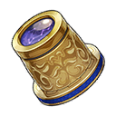
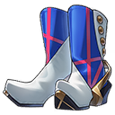

추천 광추
거울 속 지난날의 나
격파 특수효과 +60%
효과 자세히
필살기 이후 팀 피해·SP 및 웨이브 에너지 제공.
댄스! 댄스! 댄스!
필살기 아군 행동 게이지 +24%
효과 자세히
격파 창에 딜러 행동을 추가할 때.
기억 속 모습
격파 특수효과 +56% · 공격 에너지 +8
효과 자세히
격특·필살기 순환을 모두 보강.
맞물린 톱니
공격·피격 시 에너지 8pt
효과 자세히
턴당 1회, 저비용 에너지 선택.
추천 유물
꿈을 조작하는 시계공 4 · 아공간 이상 사물 수용소 2
- 머리

주옵션HP부옵션속도 · 격파 특수효과 · HP% · 방어력% - 손
 주옵션공격력부옵션속도 · 격파 특수효과 · HP% · 방어력%
주옵션공격력부옵션속도 · 격파 특수효과 · HP% · 방어력% - 몸통
 주옵션HP% / 방어력%부옵션속도 · 격파 특수효과 · HP% (주옵션 제외) · 방어력% (주옵션 제외)
주옵션HP% / 방어력%부옵션속도 · 격파 특수효과 · HP% (주옵션 제외) · 방어력% (주옵션 제외) - 다리
 주옵션속도부옵션격파 특수효과 · HP% · 방어력%
주옵션속도부옵션격파 특수효과 · HP% · 방어력% - 구체
 주옵션HP% / 방어력%부옵션속도 · 격파 특수효과 · HP% (주옵션 제외) · 방어력% (주옵션 제외)
주옵션HP% / 방어력%부옵션속도 · 격파 특수효과 · HP% (주옵션 제외) · 방어력% (주옵션 제외) - 매듭
 주옵션격파 특수효과 / 에너지 회복효율부옵션속도 · 격파 특수효과 (주옵션 제외) · HP% · 방어력%
주옵션격파 특수효과 / 에너지 회복효율부옵션속도 · 격파 특수효과 (주옵션 제외) · HP% · 방어력%
이 조합을 추천하는 이유
시계공 필살기 팀 격특 +30%. 수용소 속도 145 이상에서 팀 격특 +18%. 동일 세트 팀 효과 중첩 제한.
유성을 쫓는 괴도 4 · 겁화 연등의 연마궁 2
- 머리
 주옵션HP부옵션속도 · 격파 특수효과 · HP% · 방어력%
주옵션HP부옵션속도 · 격파 특수효과 · HP% · 방어력% - 손
 주옵션공격력부옵션속도 · 격파 특수효과 · HP% · 방어력%
주옵션공격력부옵션속도 · 격파 특수효과 · HP% · 방어력% - 몸통
 주옵션HP% / 방어력%부옵션속도 · 격파 특수효과 · HP% (주옵션 제외) · 방어력% (주옵션 제외)
주옵션HP% / 방어력%부옵션속도 · 격파 특수효과 · HP% (주옵션 제외) · 방어력% (주옵션 제외) - 다리

주옵션속도부옵션격파 특수효과 · HP% · 방어력% - 구체
 주옵션HP% / 방어력%부옵션속도 · 격파 특수효과 · HP% (주옵션 제외) · 방어력% (주옵션 제외)
주옵션HP% / 방어력%부옵션속도 · 격파 특수효과 · HP% (주옵션 제외) · 방어력% (주옵션 제외) - 매듭
 주옵션격파 특수효과 / 에너지 회복효율부옵션속도 · 격파 특수효과 (주옵션 제외) · HP% · 방어력%
주옵션격파 특수효과 / 에너지 회복효율부옵션속도 · 격파 특수효과 (주옵션 제외) · HP% · 방어력%
이 조합을 추천하는 이유
개인 격파·에너지 중심. 화염 약점 명중 시 연마궁 격특 +40%.
꿈을 조작하는 시계공 4 · 도적국 탈리아 2
- 머리 주옵션HP부옵션속도 · 격파 특수효과 · HP% · 방어력%
- 손
주옵션공격력부옵션속도 · 격파 특수효과 · HP% · 방어력%
- 몸통
주옵션HP% / 방어력%부옵션속도 · 격파 특수효과 · HP% (주옵션 제외) · 방어력% (주옵션 제외)
- 다리
주옵션속도부옵션격파 특수효과 · HP% · 방어력%
- 구체
 주옵션HP% / 방어력%부옵션속도 · 격파 특수효과 · HP% (주옵션 제외) · 방어력% (주옵션 제외)
주옵션HP% / 방어력%부옵션속도 · 격파 특수효과 · HP% (주옵션 제외) · 방어력% (주옵션 제외) - 매듭
 주옵션격파 특수효과부옵션속도 · HP% · 방어력%
주옵션격파 특수효과부옵션속도 · HP% · 방어력%
이 조합을 추천하는 이유
탈리아는 전투 속도 145 이상에서 격파 특수효과 +20%를 추가로 제공합니다.
이 정도면 잘 키웠다
선택한 세팅 기준 · —는 확인된 수치 없음
아군 전체의 격파 특수효과 증가를 우선합니다.
| 스탯 | 추천 스탯 | 준종결 | 종결 |
|---|---|---|---|
| 속도 | 134 | 전투 진입 145+[1]자체 계산 · 전투 진입 시 속도 145 이상을 확보해야 수용소 2세트가 아군 전체에 격파 특수효과 18%를 부여합니다.자체 계산 | — |
| 격파 특수효과 | 150~250%+[2]Prydwen 실전 권장 범위. 필살기 버프 제외. | — | — |
화염 약점 적을 타격하여 개인 격파 특수효과를 올립니다.
| 스탯 | 추천 스탯 | 준종결 | 종결 |
|---|---|---|---|
| 속도 | 134+ | — | — |
| 격파 특수효과 | 150~250%+[1]Prydwen 실전 권장 범위. 필살기 버프 제외. 연마궁 화염 약점 타격 효과 +40%는 전투에서 적용. | — | — |
세팅 기준·출처
공개 가이드에서 이 세팅의 준종결 또는 종결 수치를 확인하지 못했습니다.
스탯 조건과 각주
- 격파 특수효과 · 추천 스탯 Prydwen 실전 권장 범위. 필살기 버프 제외. 연마궁 화염 약점 타격 효과 +40%는 전투에서 적용. ↑
성혼과 추천 돌파
보상으로 성혼 해금. 팀 격특 공유는 4단계, 스킬 강인성 감소는 6단계.
1첫 스킬 뒤 SP +1
최고의 관중석
2전투 시작 에너지 회복효율 +25%
3턴.
3전투 스킬·특성 +2
해당 스킬과 대응 강화 스킬의 레벨을 올린다.
4동료 격특 +개척자 격특의 15%추천
비둘기를 감춘 모자
5필살기 +2 · 일반 공격 +1
해당 스킬과 대응 강화 스킬의 레벨을 올린다.
6전투 스킬 타격 +2회추천
내일은 스포트라이트 아래서 휴식을
추천 파티


기본 운영과 행적
기본 운영
격파 전에 필살기로 댄스 파트너 부여. 허수 약점인 적은 바운스 스킬로 강인성 감소. 격파 이후 딜러 공격 연결.
행적 육성 순서
필살기 → 특성 → 전투 스킬 → 일반 공격. 승급 2단계 적 수에 따른 슈퍼 격파 배율과 6단계 행동 지연.
아하 속도 계산기 →